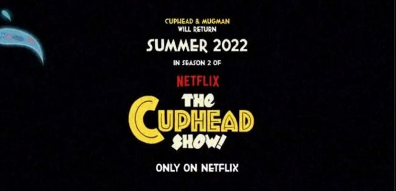
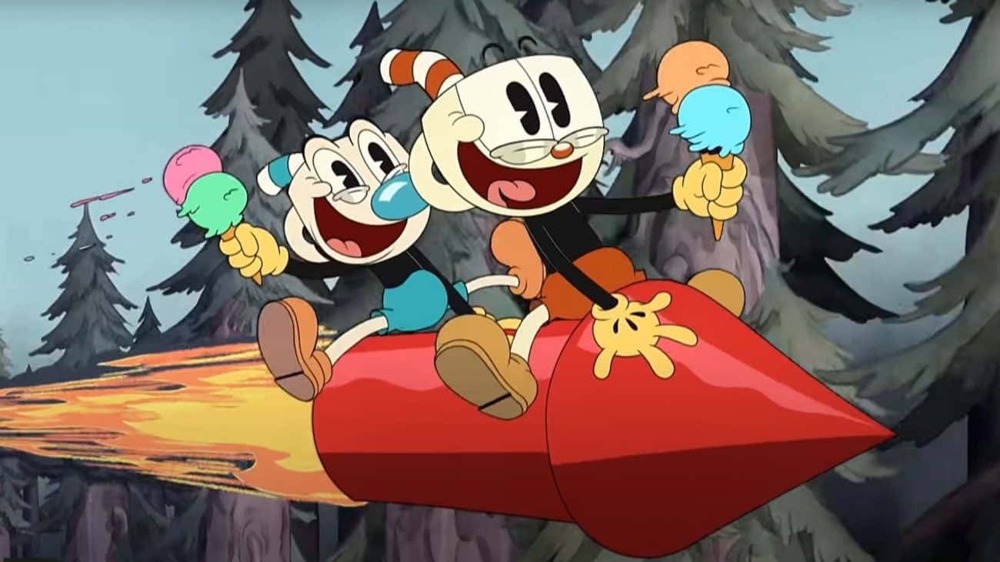

Saiba mais
Ficha técnica
Plataformas: PS4, Xbox One, Nintendo Switch, Windows e macOS
Desenvolvedora e distribuidora: StudioMDHR Entretainment
classificação indicativa: 10 anos
A série foi lançada globalmente em 18 de fevereiro de 2022, recebendo críticas positivas ao redor do mundo todo, com elogios pela qualidade da animação, dublagem, música, humor e o tom, mas alguns sentiram que faltava alguma coisa, com os enredos dos episódios sendo criticados por serem "muito fragmentados" e "muitas vezes repetitivos". A segunda temporada foi lançada em 19 de agosto de 2022, seguida, logo depois, pela terceira temporada lançada em 18 de novembro de 2022.
A história ocorre no mundo do estilo dos anos 1930 na Inkwell Isle (Ilha Tinteiro), a série segue as aventuras de Cuphead (Xicrinho) e Mugman (Caneco), os irmãos Canecas que vivem com seu avô e zelador, Elder Kettle (Vovô Chaleira), em uma cabana em forma de bule. As histórias dos irmãos geralmente giram em torno deles tentando encontrar uma saída para vários problemas, encontrando e interagindo com personagens da história original do videogame. Um enredo comum é o Devil caçando Xicrinho por sua alma, pois ele acredita que é seu por direito depois que Xicrinho perdeu um jogo de colheita de almas chamado "Soul Ball/Bola da Alma", apenas para ser sempre frustrado por Xicrinho e Caneco.
Xicrinho foi dublado no Brasil por Sérgio Stern, e Caneco foi dublado por Daniel Simões